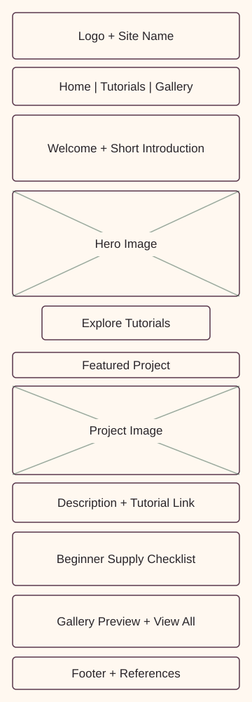
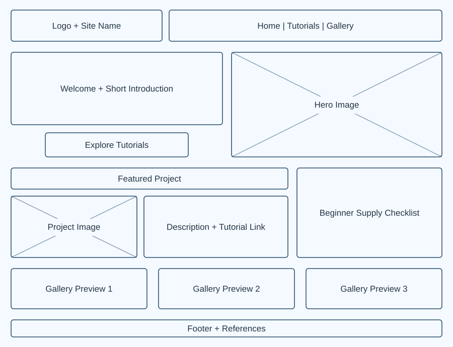

Plum
#563449
Main header, headings, navigation links, and primary buttons.
WDD 131 · W05 Project
A little color. A place to begin.
A welcoming painting resource for people who want to start creating, one simple project at a time.
I chose this name because it connects my interest in painting with a friendly space for sharing ideas and encouraging creativity. “Creative Corner” suggests a comfortable place where beginners can learn and explore without feeling intimidated.
Logo concept: A paint palette with colorful paint dots represents creativity, while the simple circular shape keeps the logo recognizable at small sizes.
Kyla’s Creative Corner will help beginner and returning hobby painters build confidence through practical painting tips, simple tutorials, supply guides, and a small gallery of finished projects. Visitors will be able to find a project suited to their time and experience, save ideas, and request a future tutorial.
Target audience: Teens and adults who want an approachable creative hobby, including students and working people with limited time for painting.
A separate references.html page, linked in the footer, will credit any outside images or text used in the final website.
JavaScript will display gallery cards from an array of painting objects, filter them by medium, and update favorite buttons. Separate functions will render cards, apply filters, and save favorites in localStorage. Event listeners, conditional checks, array methods, and template literals will support these interactions. The request form will provide a visible confirmation after valid input; it will be a classroom demonstration without an email delivery service.
The final site will use consistent navigation, responsive layouts, descriptive image alternatives, optimized local images, and lazy loading for images below the first screen.
These questions represent visitors who are new to painting or returning to it after a break.
The palette combines warm paper tones with plum and green accents. These same colors are applied throughout this planning document.
#563449
Main header, headings, navigation links, and primary buttons.
#365C4B
Section numbers, small labels, secondary accents, and focus outlines.
#FFF8F0
Page background and light text on dark backgrounds.
#29252A
Paragraphs, lists, and wireframe labels.
Contrast rule: Use charcoal, plum, or forest green text on cream. Use cream text on plum or forest green. Avoid placing plum and forest green text on each other.
Create something colorful.
Georgia, with a serif fallback, will be used for the site title and section headings. Its classic letterforms give the website a warm, personal style.
Small steps can lead to beautiful paintings.
Arial, with a sans-serif fallback, will be used for paragraphs, navigation, buttons, captions, and form labels. Body text will begin at 16 pixels with a line height of 1.65 for comfortable reading.
Both font families are used in this document. System fonts keep the plan lightweight and allow it to open without downloading external font files.
These diagrams show the planned homepage, rather than the layout of this planning document. Boxes represent future content and images.


Layout behavior: The final homepage will switch to a wider layout around 768 pixels, keep content within a centered maximum width, and preserve the same content order across devices.